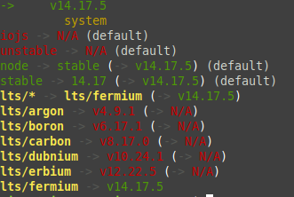

Tags básicas tipo <h1~6>, <p>, <li>, <ol>, <ul>, <a> e seus principais atributos(href, target, title etc).
As tags <div> e <span> além da definição de peso semântico e nível bloco e linha.
Outras tags:<strong>, <em>, <b>, <u>, <cite>, <i>, <pre>.
Também foram mencionadas as tags <dd>, <dt> e <dl>, mas foi dito que são incomuns apesar de eu ter curtido mais que as listas normais.
Id's podem ser usados para linkar uma parte da página à outra. Para linkar id's de outras páginas basta colocar o nome da página seguido do # e o nome. Tipo assim
Os elementos HTML <table> e <img>. Os principais atributos da tag <img> são alt, height, src e width. Eu curti a ideia de mapa de imagem mas parece que não é tão comum usar com frequência.
A tag <table> define uma tabela, a tag <tr> define uma linha e dentro dela são colocadas as tags <td> ou <th>, que só colocam em negrito para definir a categoria da tabela.
| Cor | Placa | Modelo | Marca |
|---|---|---|---|
| Cinza | 32A123A | Modelo de carro | Sla, Honda? |
Deu pra aprender vários comandos do terminal, vou fazer tabela só pq sim. Diretório=Pasta.
| Comando | O que faz |
|---|---|
| exit | Sai do terminal. |
| cd | Muda de diretório e.g.: cd ~/Downloads, se move pra pasta Downloads. Famoso teleporte editado. |
| pwd | Mostra o diretório atual. |
| ls | Lista os arquivos e diretórios do diretório atual. |
| O comando ls -l mostra mais informações do arquivo(data de criação, nível de proteção etc) | |
| O comando ls -a mostra arquivos e diretórios ocultos. | |
| O comando ls -la lista informações sobre todos os arquivos e diretórios, inclusive os ocultos. | |
| cp | Copia arquivo. |
| mv | Move Arquivo. |
| mkdir | Cria um diretório. |
| rm | Remove um arquivo. |
| O comando rm -r remove um diretório. | |
| O comando rm * remove um arquivo, ou todos se nenhum for especificado. | |
| man | Ajuda para comandos, tipo man cp, detalha o cp. |
| clear | Limpa o texto que aparece no terminal. |
| xdg-open | Abre um arquivo ou documento, e.g.:xdg-open ~/Documentos. |
| touch | Cria um arquivo na pasta atual. |
| rmdir | Remove um diretório. |
| echo | Repete uma frase ou palavra qualquer que seja especificada, se depois da frase ou palavra for digitado sinal de maior que(>) e um arquivo, o comando cria o arquivo com a frase dentro. |
| cat | Imprime o conteúdo de um arquivo na saída padrão, como no echo, e também como o echo ele pode imprimir conteúdo em outro arquivo. |
| tail | Imprime as últimas linhas de um arquivo, tipo tail -n 5 qualquercoisa.txt imprime as últimas 5 linhas de um arquivo |
O . e o .. tem funções interessantes. O ponto final indica o diretório atual e pode ser digitado para economizar texto, e.g., cp text.txt ./text4.txt, o arquivo sera copiado para a mesma pasta com outro nome. O mesmo vale para cp text3.txt .., o arquivo vai para a pasta pai. Para renomear um arquivo basta mover um arquivo com outro nome, e.g.:mv text.txt text66.txt
Hoje deu pra ver uns comandos dentro do vi. O vi é um editor de texto de trocentos anos atrás, na época que não tinha interfaces dahoras, mas ainda estudam isso hoje por algum motivo. Existem 3 modos dentro do vi, o modo de comando, o modo de linha de comando e o modo de inserção. O vi já entra em modo de comando e ao apertar : ele entra em modo de linha de comando. Para sair do modo linha de comando basta apagar o :. Para entrar no modo inserção basta apertar i no modo de comando, e para sair basta apertar esc. Porém ao entrar no modo inserção as setas não fazem sua função nem a tecla backspace, então é necessário sair do vi para resolver isso. É necessário criar um arquivo chamado .vimrc e entrar no modo inserção, depois digitar set nocompatible, depois dar uma quebra de linha, e continuar escrevendo set backspace=2. Agora é sair do modo inserção, salvar e sair do modo vi e as setas e o backspace estarão funcionando como deveriam no modo inserção.
Alguns comandos básicos úteis da linha de comando estarão listados abaixo bem como suas respectivas funções.
| Comando | O que faz |
|---|---|
| :q | Sai do editor vi. |
| :q! | Sai do editor sem salvar. |
| :w | Salva mudanças feitas no vi. |
| :wq | Salva e sai do vi. |
| :u | Desfaz a última mudança. |
| :help | é tipo o man mas pra comandos do modo de comando, ou algo assim. |
Abaixo há outra tabela com comandos do modo de linha de comando, alguns são meio desnecessários mas algum dia deve ser útil.
| Comando | O que faz |
|---|---|
| i | Entra no modo inserção |
| a | ~Entra no modo inserção mas os caracteres digitados aparecem depois daquele retângulo branco piscando. Honestamente já me acostumei com as letras saindo do lado esquerdo então entrar sempre com o i. |
| o | Insere uma nova linha abaixo de onde o retângulo branco piscando estiver(vou chamar de cursor pq pqp) e entra no modo inserção. |
| O | Insere uma nova linha acima de onde estiver o cursor e entra no modo inserção. |
| h(não tenho certeza se é h ou H, ou se tanto faz, TESTAR QUANDO ESTIVER NO UBUNTU) | Move o cursor pra a esquerda. |
| j(não tenho certeza se é j ou J, ou se tanto faz, TESTAR QUANDO ESTIVER NO UBUNTU) | Move o cursor pra baixo. |
| k(não tenho certeza se é k ou K, ou se tanto faz, TESTAR QUANDO ESTIVER NO UBUNTU) | Move o cursor pra cima. |
| l(não tenho certeza se é l ou L, ou se tanto faz, TESTAR QUANDO ESTIVER NO UBUNTU) | Move o cursor pra direita. |
| w | Move o cursor para a primeira letra da prócima palavra. |
| 2w move o cursor para a primeira letra da segunda palavra a partir da atual, e isso vale para todos os números, 3w avança 3 palavras, 4w avança 4 palavras, etc. | |
| b | Move o cursor para a primeira letra da palavra atual, ou da palavra anterior caso esteja num espaço vazio. |
| 2b move o cursor 2 palavras pra trás e isso vale para todos os números, 3b volta 3 palavras, 4b volta 4 palavras , etc. | |
| 0 | Move o cursor para o começo da linha atual. |
| $ | Move o cursor para o fim da linha atual. |
| gg | Move o cursor para o início do arquivo. |
| G | Move o cursor para a primeira letra da última linha. |
| G$ | Move o cursor para a última letra da última linha, o fim do arquivo. |
| x(não tenho certeza se é x ou X, TESTAR QUANDO ESTIVER NO UBUNTU) | Apaga o caractere onde o cursor estiver. |
| db | Apaga todo o conteúdo entre o cursor e a primeira letra da palavra anterior. |
| dw | Apaga todo o conteúdo entre o caractere onde o cursor estiver e a primeira letra da próxima palavra. |
| d0(Conferir quando estiver no ubuntu tb) | Apaga todo o conteúdo entre o cursor e o primeiro caractere da linha atual. |
| d$(Conferir quandoestiver no ubuntu tb) | Apaga todo o conteúdo entre o caractere onde o cursor estiver e o último caractere da linha atual. |
| dd | Apaga(na verdade recorta, mas no fim é quase a mesma coisa) a linha toda onde o cursor estiver. |
| 3dd apaga as próximas 3 linhas inteiras, e funfa com 4dd 5dd do msm jeito. | |
| yy | Copia uma linha inteira. |
| p | Cola o que estiver copiado(ou recortado) na linha de baixo, que se move pra baixo dando lugar ao que for colado. |
| P | Cola o que estiver copiado(ou recortado) na linha atual, que se move pra baixo dando lugar ao que for colado. |
| V | Entra no modo visual destacando a linha atual, e ao mover com as setas seleciona a linha inteira de baixo ou a de cima, depende da seta teclada. Nesse modo y copia e d recorta e volta ao modo de inserção, w e b e provavelmente a maioria dos comandos listados aqui funcionam nesse modo. |
| v | Entra no modo visual só que seleciona caractere por caractere a partir do cursor. Nesse modo y copia e d recorta e volta ao modo de inserção, w e b e provavelmente a maioria dos comandos listados aqui funcionam nesse modo. |
| ctrl+v | Entra no modo visual em bloco, que é tipo aquele modo do vscode quando vc seleciona o texto com o scroll do mouse. Nesse modo y copia e d recorta e volta ao modo de inserção, w e b e provavelmente a maioria dos comandos listados aqui funcionam nesse modo. |
| 1v | Seleciona com o mesmo formato da última seleção feita em qualquer um dos modos visuais e volta ao modo visual. |
| gv | Seleciona a mesma seleção feita em algum modo visual e volta ao modo visual. |
Hoje eu vi uns comandos dahorinha pro vscode, tipo o ctrl+shift+enter. Até que enfim não preciso mais ir pro final da linha e apertar enter, se bem que eu tinha começado a apertar end e dps enter. Sei la. É mais uma opção pra facilitar, um dia eu acostumo. Ctrl+shift+enter faz a mesma cosia pra cima. Digitar html:5 já coloca as tags tudo, doctype html head body e umas tags metadata np head. Mto foda. Digitar a tag#nomedoid cria uma tag já com o id, o mesmo vale para classes, só que no lugar do # tem que colocar um ponto. Se nenhuma tag for especificada vai ser criada uma tag div com a classe ou o id.tag*numerp cria várias tags, tipo p*3 cria 3 parágrafos. Digitar tag>outratag cria uma outratag filha dentro da tag pai. Por hoje foi isso, tinha umas extensões pra instalar e mais uns exercícios pra treinar o terminal, mas o terminal é o terminal, hoje não vou ver isso.
Hoje fui rever o conteúdo de javascript e com pouco tempo já resolvi algumas duvidas que tinha antes, tipo vários ifs são melhores que if, else if, else if, pelo simples fato de que se eu quiser concatenar uma string em outra string eu só consigo com vários ifs, pelo menos do modo como faço. Outra questão que martelava minha cabeça era, = não concatena, += concatena. Isso não me atrapalhou muito na resolução do snapCrackle mas a questão dos ifs só atrapalhou pra krl. Ao concatenar strings uma string é printada depois da outra, ao concatenar números eles se somam, então veja com cuidado isso aê. Resolvi a questão lá do code wars do semaforo carai.
Flex direction
flex-direction-row
flex-direction-row-reverse
flex-direction-column
flex-direction-column-reverse
Flex wrap
flex-wrap-nowrap
flex-wrap-wrap
flex-wrap-wrap-reverse
O flex-flow abaixo é o tal do shorthand pra flex-direction e flex-wrap
Flex flow
flex-flow-row-nowrap
flex-flow-row-wrap
Justify content
jutify-content-flex-start
justify-content-flex-end
justify-content-center
justify-content-space-between
justify-content-space-around
justify-content-space-evenly
Align items
align-items-stretch
align-items-flex-start
align-items-flex-end
align-items-center
align-items-baseline
o align content deu errado sla pq
Align content
align-content-stretch
align-content-flex-start
align-content-flex-end
align-content-center
align-content-space-between
align-content-space-around
Hoje vi uns atalhos que parecem ser muto úteis para usar no javascript, tipo usar o document.querySelector.bind(document) numa variável, aí é só chamar a variável toda vez que quiser usar o document.querySelector("qualquer caminho no css"). Por exemplo, quero selecionar um trecho com id teste, então no início do documento coloco let $ = document.querySelector.bin(document). Quando precisar selecionar a tag com o id mencionado basta digitar $.("#teste"). Mas isso foi ensinado por um cara que já tinha usado jquery, por isso o $. No meu caso a melhor opção para atribuir seria algo do tipo let querysel ou algo assim, uma forma não tão curta mas se eu quiser posso fazê-la com vários métodos de selecionar tipo getElementById, getElementsByName, getElementsByTagName etc. Testar no próximo trabalho. Outra coisa importante que vi é que não precisa selecionaro document para procurar algo, pode ser uma HTMLCollection, que é resultado de um getElementsByTagName e getElementsByClassName. Poderíamos procurar todos os elementos p existentes dentro de uma única div com id teste ao selecioná-la com o document.querySelector.("#teste").querySelector("p"). Aquilo que eu queria fazer muito no CSS, que é selecionar algum elemento pai, apesar de ter como fazer isso eu nunca decorei pq o CSS tem muita coisa pra decorar, no javascript tem como fazer e é o método .closest. Se eu quiser chamao a div que seja pai mais próximo de algum elemento selecionado basta digitar document.querySelector("#teste").closest("div"). Ele irá procurar o div pai mais próximo da tag cujo o id é teste. isso não procura filhos, mas pra fazer isso é só selecionar com > tipo div>aside>p e etc.
Ae carai 2 dias seguidos, isso quer dizer que voltei a anotar o que aprendi com mais frequência. Mas é pq nessa sprint não tem atividade valendo nota e parece ser mais tranquila, se não for tão tranquila não escrevo aqui nos próximos dias hsauhsuasuah.
A aula sobre métodos de string mostra vários métodos além de uma página no mdn falando sobre strings e tipos de strings, algum outro dia dou foco nisso. Hoje o foco é nos métodos, e se algum deles falhar por isso eu volto e leio mais o primeiro link, e fazer isso se mostrou bem efetivo nas outras sprints(bateu a dúvida? volta e lê tudo de novo, pq vc polou algo sim, eu te conheço).
| Método | O que faz |
|---|---|
| .split() | "texto".split("") === (5) ["t", "e", "x", "t", "o"] "texto texto".split(" ") === (2) ["texto", "texto"] Não modifica o original, retorna um array de strings. |
| .slice() | "texto".slice(2) === "xto" Seleciona a partir do índice 2 até o final "texto".slice(-2) === "to" Seleciona a partir do índice -2, que é o enésimo começando do fim da string "texto".slice(2, 4) === "xt" Seleciona um intervalo, do 2 ao 4 "texto".slice(-5, 3) === "tex" seleciona um intervalo comaçando do fim Retorna uma string, não modifica o original. |
| .substring() | Faz a mesma coisa que o de cima só que não dá pra usar índices negativos. Retorna uma string e não modifica o original. |
| .substr | É diferente dos 2 acima, o segundo parâmetro não é um índice, é a quantidade de indices
que ele vai retornar. "texto".substr(2, 2) === "xt" Pode ser mais útim em várias situações, na minha opinião, apesar de não poder usar indices negativos. |
| .indexOf() | "texto".indexOf("e") === 1 "texto".indexOf("t") === 0 "texto".indexOf("t", 1) === 3 Retorna o índice do início da ocorrência da string entre parêntesis, na string especificada. Se não houver ocorrências, retorna -1. O segundo parâmetro, opcional, é onde se iniciará a busca pela ocorrência. Retorna um número, não modifica o original. |
| .lastIndexOif() | Semelhante ao .indexOf(), porém a string começa a ser contada pelo último caractere, apesar do index ser contado como a palavra foi escrita, ou seja, conta de trás pra frente mas o index é de frente pra frente mesmo. Retorna um número, não modifica o original. |
| .includes() | Esse método verifica se a string dentro dos parêntesis estão dentro de outra string, se a posição da palavra não importa, esse até agora é o método mais indicado para procura de trechos de texto em outro texto. 2 parâmetros, o segundo é opcional, o índice de onde se iniciará a busca. Restorna um booleano(true ou false), não modifica o original. |
| .startsWith() | Verifica se uma string começa com a string especificada dentro dos parêntesis, é literalmente o que o nome diz. Assim como os outros métodos acima, ao colocar um número depois da string, a busca iniciará a pesquisa a partir do indíce equivalente ao número. Retorna um booleano(true ou false), não modifica o original. |
| .endsWith() | Semelhante ao método acima, porém, começa contando do fim. Geralmente a primeira letra do trecho é o index, nesse caso a última letra do trecho é o index, que é contado normalmente sem inverter a string. Retorna um booleano(ture ou false), não modifica o original. |
| .trim(), .trimRight, e .trimLeft | Remove os espaços do começo e/ou do fim da string. Mas só esses. todos os espaços que estiverem depois da primeira caracteres válido ou antes do último continuarão. .trim remove dos 2 lados, se tiver dos 2 lados, .trimRight remove da direita e .trimLeft remove da esquerda. Existem funções melhores pra remover espaços, mas caso seja necessário esse nível de especificidade, tá aí. |
| .toUpperCase e .toLowerCase | Colocam o texto todo da string em letras maiúsculas e minúsculas, respectivamente. |
| .match() e .search() | Bastante úteis para fazer buscas mais refinadas que procurar uma letra. Dentro do parêntesis vai uma expressão regular, e o match retorna um array com a string que se encaixar nas especificações da expressão regular, a tring e um grupo que eu não sei o que é ainda. O search é mais simlpes, ele retorna o indíce da ocorrência do que se encaixar na expressão regular, se não houver, retorna -1. |
| .concat | Concatena 2 arrays de strings ou números, coloca tudo numa array só e retorna outro array. O tal do [...[array]] faz isso melhor. |
| Método | O que faz |
|---|---|
| .map() | |
| .reduce() | |
| .filter() | |
| .sort() | |
| .sort() |
let texto = [4,8,4,7,4,2,65,9,7,6] texto.sort((x, y) => x-y) === (10) [2, 4, 4, 4, 6, 7, 7, 8, 9, 65] texto.sort((x, y) => y-x) === (10) [65, 9, 8, 7, 7, 6, 4, 4, 4, 2] O método .sort é muito mais poderoso que ordenar em ordem crescente ou decrescente, mas por ora isso basta, retorna um array, modifica o original. |
| .join() | let texto = ["t", "e", "x", "t", "o"] texto.join() === "texto" texto.join("-") === "t-e-x-t-o" Faz array virar string, caracteres da string serão separados com o que tiver no parâmetro. Retorna uma string, não modifica o original. |
| .splice() | let texto = ["t", "e", "x", "t", "o"] texto.splice(2) === (3) ["x", "t", "o"] => Array original === ["t", "e"] texto.splice(2, 1) === ["x"] => Array original === ["t", "e", "t", "o"] texto.splice(1, 2) === (2) ["e", "x"] => Array original === ["t", "t", "o"] texto.splice(1, 1, "abacate") === ["e"] => Array original === ["t", "abacate", "x", "t", "o"] No mozila parece que não funciona a parte de substiruir, só exclui msm. Retorna um array, modifica o original. |
| .slice() | É exatamente o mesmo conceito do slice pra strings, só que retorna um array, continua a não modificar o original |
| .includes() | Mesmo conceito do includes de string, só que com array. Não modifica o original. |
| .findIndex() | let texto = ["t", "e", "x", "t", "o"] texto.findIndex(a => a === "x") === 2 Retorna a posição do item do array, se existir no array. Caso não exista, retorna -1. Retorna um número, não modifica o original. |
| .find | Faz a mesma coisa que o método acima, porém retorna o item do array ao invés de retornar o index dele. |
| .pop() | Retorna o último item de um array. Só isso. Pode ser armazenado numa variável. Nada vai entre os parêntesis. Modifica o original. |
| .push() | Adciona o que tiver entre os parêntesis ao array, no fim dele para ser mais específico. Retorna o indíce do que foi adcionado, modifica o original |
| .shift() | Remove e retorna o primeiro item de um array. Só isso. Pode ser armazenado numa variável. Nada vai entre os parêntesis. Modifica o original. |
| .unshift() | É o push só que no começo do array.Retorna o novo length. Modifica o original. |
| .concat() | É literalmente o mesmo que tava na lista dos métodos de string, pq ele atua em string e arrays. |
| .reverse() | Não recebe parâmetros. Modifica o original. Faz exatamente o que o nome propõe, ordena os itens do array no mesmo array começando pelo último até o primeiro. |
| Método | O que faz |
|---|---|
| ().toString() | (123).toString() === "123" (123).toString(2) === "1111011" No primeiro parâmetro vai o número a ser convertido, no segundo a base (binário, octal, qualquer uma de 2 até 36). Retorna uma string, não modifica o original. |
| .toPrecision() |
let texto = 1.2535 texto.toPrecision() === "1.2535" texto.toPrecision(3) === "1.25" Esse método retorna uma string com o número de dígitos definido pelo parâmetro. |
| .toFixed() | let texto = 0.002535 texto.toFixed(3) === "1.254" Parecido com o de cima, porém o parâmetro é o número de casas decimais retornadas, e arredonda pra cima. Retorna uma string, não modifica o original. |
| .toExponential() | É a mesma coisa que o de cima, só que retorna com notação exponencial. Esse número em notação exponencial pode ser convertido em número normal com o .toFixed(). |
Parece que é muito mais comum usar essas coisas aí de baixo com o react então já vai acostumando pq pode dar ruim no futuro:
Classes, callbacks, eventos de usuário, template string(`${variavel, função etc} texto comum`), arrow functions, métodos de array, ternário(if só que com pouco texto), spread operators e desconstrução de dados(objetos e arrays).
Digitar isso aqui no terminal:
Lê antes de copiar e colar sua mula
A opção stable tem que ser 14.algumacoisa e ser default
Pra instalar o yarn é digitar o código e papum.
Toda vez que for criar algum projeto novo que precise do react tem que digitar o código:
Pra ver seu projeto no navegador não é com o famoso alt+l e alt+o, é com o código:
Pra instalar o vercel, além de ter o node precisa digitar no terminal o seguiinte código:
Agora todo site(ou qual for o nome que dão pra site, projeto aplicação sla) que precisar ir pro ar, tipo no github pages, basta digitar o código:
Toda vez que alguma atualização precise ser feita, o código abaixo o atualiza o site:
É mais fácil que o github pages mas o github pages nunca foi difícil, então por mim tanto faz, já que nenhum deles é uma opção para projetos de verdade, daqueles que os clientes pagam, é só pra fazer as atividades aqui na kenzie.
O react é uma biblioteca com várias coisas prontas, tipo botão e várias estilizações aí, e o jsx é o html junto com o javascript, é normal ver coisas tipo function sla(man) {
return <h1>man<h1>
}
Pra usar o react router DOM digitar o seguinte comando dentro do projeto:
Para importar algo dentro do projeto, basta digitar import { o que vc tiver a fim de importar } from "react-router-dom".
Antes de começar a usar é necessário ir no index.js e importar BrowserRouter, depois dentro do <React.StrictMode> como children colocar o <BrowserRouter>, e dentro deste colocar o <App>, também como children.
Até hoje precisei importar Switch, Route(que são necessários para paginação, clicar em algo e ir pra outro lugar), Link e o BrowserRouter.
Não sei o que é ainda, mas tem um comando que tem que digitar antes de começar a implementar.
Para começar a usá-lo, é necessário importar algumas coisas de alguns lugares, eu sla os termos técnicos.
Depois de importar, até agora eu só precisei usar os comandos abaixo, se precisar de mais coisas tem no github do yup .
O register é pra registrar o campo do formulário, o handle submit é a função a ser executada ao fazer o submit, o formState nesse caso é pra renderizar a mensagem de erro, o useForm nesse caso(?) é pra colocar o que vai ser validado em cada campo, e fica tudo armazenado no formSchema(o nome não precisa ser esse).O código no formSchema define várias coisas que precisam ser digitadas ou escolhidas nos inputs para que o submit possa ser executado, ao clicar no botão nada acontece a não ser que tudo o que for passado aqui esteja nos conformes. Tipo regex de email, cpf essas coisas.
Se precisar de algo mais pesquisa no github do yup
Texto